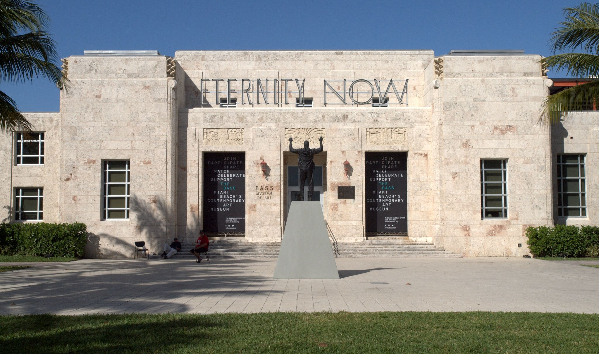
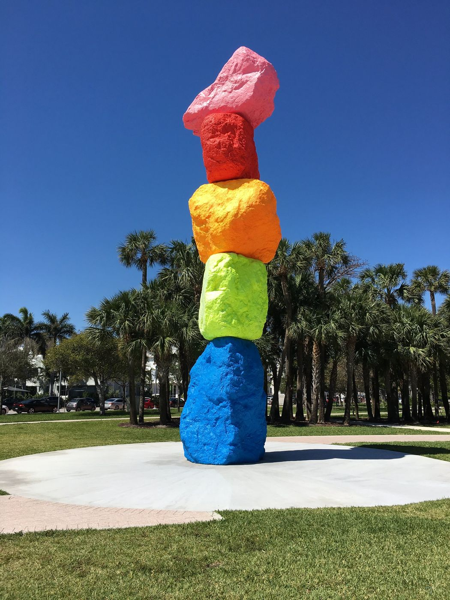
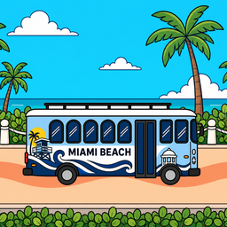
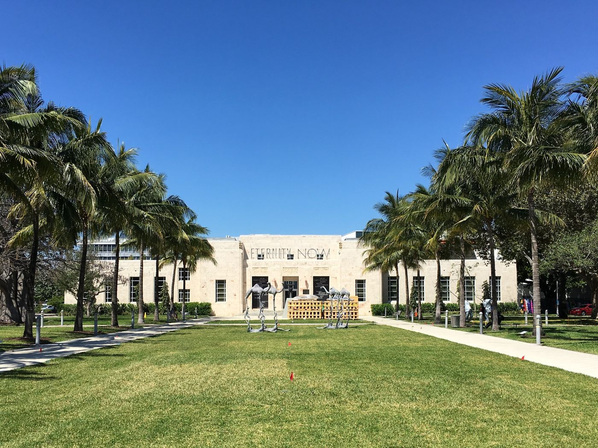
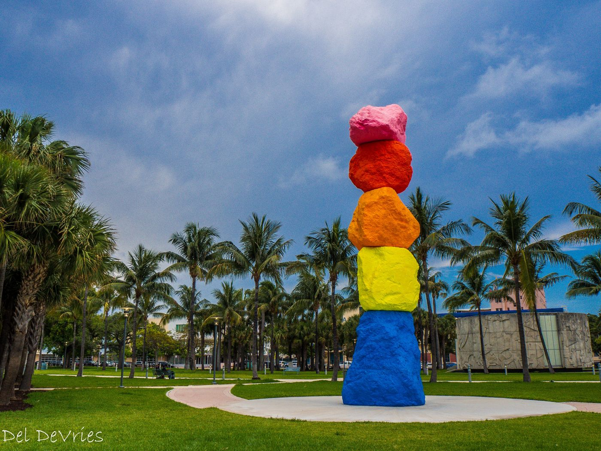

LaneSync
A sprint timer. Two phones, or a phone and an Apple Watch, time runners from the start signal to the finish line, with automatic finish detection.
Privacy policy →
Miami Beach · Florida
Collins Park Enterprises builds small, beautifully focused mobile apps from a corner of Miami Beach between the museum and the sea.
See our appsAbout us
Collins Park Enterprises LLC is a Florida limited liability company that designs and develops mobile apps for iPhone, Apple Watch and Android. Our apps do one job well, keep your data on your device wherever possible, and never show ads.
Home base is the Collins Park neighborhood, steps from The Bass and Ugo Rondinone's Miami Mountain.

Our apps
A sprint timer. Two phones, or a phone and an Apple Watch, time runners from the start signal to the finish line, with automatic finish detection.
Privacy policy →Sprint video analysis. Record or import a sprint and get a pose-skeleton overlay, measurements and coaching tips. StrideLab Pro subscriptions are optional.
Privacy policy →
The Miami Beach trolley in real time, with arrival countdowns for nearby stops and the city water taxi schedule.
Privacy policy →

Say hello
austin.munoz@collinsparkenterprises.com
Collins Park Enterprises LLC
2100 Park Ave Apt 304
Miami Beach, FL 33139, United States